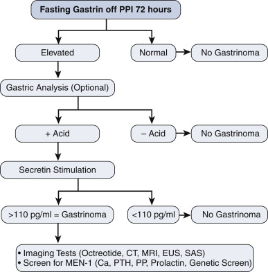
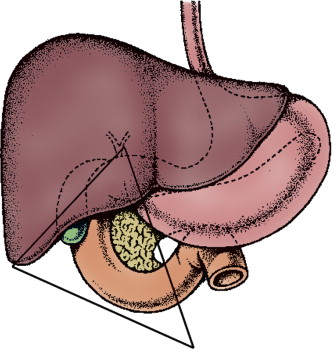

Zollinger Ellison Syndrome
DEFINITION
Gastrinoma --> PUD
D E A B M I M
EPIDEMIOLOGY
Rare
Usually ~5th decade
- younger in MEN1 associated
Risk factors
1/3 of patients have MEN 1 (parathyroid, pituitary)
D E A B M I M
AETIOLOGY
Secretion of gastrin by a neuroendocrine tumour
Gastrinoma
- in pancreas,
- or submucosally in the duodenum
- rarely at an ectopic site, e.g. antrum or ovary.
D E A B M I M
BIOLOGICAL BEHAVIOUR
Pathophysiology
Gastrin leads to profound gastric acid hypersecretion
Causes PUD
Gastrin Physiology
Synthesized in G cells, endocrine cells primarily in gastric antrum.
Small numbers in duodenal mucosa.
Gastrin release is controlled by chemical, neural and mechanical
stimuli
- stimulated by digestive proteins; phenylalanine and tryptophan
- by calcium and adrenaline
- by gastric distension
Inhibited by beta-blockade
Vagal parasympathetic control is both stimulatory and inhibitory.
- activation of vagal cholinergic reflexes by hypoglycaemia or sham
feeding stimulates gastrin release
- atropine blocks release
- truncal vagotomy causes an increase in gastric secretion, incl
food-stimulated; hypergastrinemia.
--> inhibits cholinergic inhibitory pathways
A variety of peptides also affect gastrin release
- bombesin (gastrin releasing peptide)
- inhibited by somatostatin, secretin, glucagon, gastric inhibitory
peptide (GIP), vasoactive intestinal peptide (VIP)
Pathogenesis
May involve oncogenes,
e.g. c-myc and Her-2/neu
And tumour suppressor genes,
e.g. MEN-1 gene (most
studied), DPC4/Smad, p16INK4a
Markers for aggressive behaviour include oncogenes, RET
proto-oncogene, over-expression of EGF-R and IGFIr
- also chromosomal abnormalities
Men 1
This gene contains Menin, principally a nuclear protein that alters
tumour growth factor beta signaling
Regulates nuclear factor transcription
And may function in DNA repair and synthesis.
Studied in familial and sporadic gastrinoma.
- MEN-1 associated endocrine tumours show loss of heterozygosity in
50% and 0-40% sporadic
Importance is due to hyperplasia-to-metaplasia transition.
Fundamental importance to familial and sporadic gastrinomas, but
determinant of aggressive tumour growth or mets.
Natural History
All should be treated as potentially malignant.
D E A B M I M
MANIFESTATIONS
1. Usually idiopathic PUD (75%)
- Haemorrhage, perforation and obstruction are common complications.
2. May get diarrhoea (25%)
- from the acid (destroys lipase and produces
steatrrhoea).
- 5% = diarrhoea only
Often delayed diagnosis
- mean time of symptoms to diagnosis is 5 years.
Suspect if:
Diarrhoea, pain and weight loss.
Recurrent or refractory ulcers
Prominent rugal folds (trophic effect of gastrin)
GI symptoms in an MEN-1 patient
D E A
B M
I M
INVESTIGATIONS
Biochem
Fasting Serum Gastrin
Avoid PPIs / H2 receptor blockers for 3d before
measuring.
Insufficient alone to establish diagnosis
- i.e. sensitive but not specific
- achlorhydria can cause it (pernicious anaemia, atrophic gastritis,
chronic pharmacologic suppression)
- so can H pylori, GOO with peptic ulcers, G-cell hyperplasia, short
gut syndrome and renal failure (all associated with hypersecretion
of acid)
Absolute level is not diagnostic
- 200 pg/mL = N
- only 30% of those afflicted have gastrin levels >1000 pg/mL
- 60% >500 pg/mL
--> ie these ranges not uncommon with other causes above.
Higher levels associated with degree of acid secretion, pancreatic
primary, size of tumour, extent of disease
- but no influence on prognosis
Secretin provocation test
Stimulation of gastric in ZES, mediated through secretin receptors
on gastrinoma cells.
No need to stop PPIs
Give a push (0.4mg/kg) by IV push, measure gastrin at 0. 2, 5, 10,
15, 30 min.
Increase of >120 pg/mL
- this is sensitive
Much better specificity (except that some achlorhydric pts also show
increases.
Algorithm for Diagnosis

Imaging
CT or MR often shows the tumors.
Somatostatin-receptor scintigraphy is extremely sensitive for
primary and
metastatic sites
- but still unable to assess >1/3 of primaries
Difficult circumstances:
- use transhepatic portal vein sampling with secretin or calcium
stimulation; invasive, measures gastrin
gradients,
Overall success rate of pre-op localization is ~75%
Sensitivity of imaging
Test
Primary Liver
Metastases
US
9
46
CT
31
42
MRI
30
71
Angiography 28
62
SS
58
92
EUS
High sensitivity for pancreatic leasions (?80%) but <50% for
duodenal
Also allows cytologic dx
Recommendation
Order US, CT +/- MR, EUS, SS +/- transhepatic vein sampling if
still struggling.
No routine role for PET
- low sensitivity for localization.
Evaluation for MEN 1
25% of patients have MEN1
- many with no family hx
- ZES first manifestation in less than half.
--> many later go on to get hyperparathyroidism
So screen all patients with ZES for MEN-1
And measure:
- serum calcium
- parathyroid hormone
- prolactin
Histology
Histology patterns similar between benign and malignant, cancer dx
made on
metastatic invasion.
Staging
T1 <= 1cm
T2 1-2 cm
T3 2-3 cm
T4 >3cm
Stage
0 = T0N0M0
1 = T1 anyN M0
2 = T2-3 anyN M0
3 = T4 anyN M1
D E A
B M
I M
MANAGEMENT
Principles
PPI for acid secretion
Surgery for cancer control
Medical
High dose omeprazole
- titrated to symptoms and ulcer healing.
With long periods of therapy, may need to check B12
Surgical
Gastrinoma triangle

Most are here.
Duodenum, pancreas (head & uncinate process) up to porta.
1. Work-Up and Warn
Work up with CT or MR of pancreas and somatostatin-receptor
scintigraphy.
--> Imaging of primary possible in ~3/4
Offer surgical exploration to
these patients
2. Also advise surgery when cannot
find a primary
- but warn that may not locate it (15% no find rate in -ve imaging
patients)
- Tumours may be as small as 2-3 mm and hard to find
Principles of exploration
- Kocher to examine head of pancreas and uncinate process
- mobilise body and tail of pancreas to allow bimanual palpation.
- intra-operative USS
- longitudinal
duodenotomy and palpation of mucosa (often
- sampling of nodes from gastrinoma triangle
3. If Duodenal Gastrinoma
Most common location
Hence evaluation in occult disease mandatory
Us. in 1st - 2nd part; but can be 3rd-4th
Lateral duodenotomy; longitudinally 3-4cm
- extend proximally or distally to allow better exposure for
removal.
Mucosa inspected visually, often small lesion <2mm, usually
<1cm.
- Brunner gland hyperplasia may look like a lesion but isn't.
Excise, and send for frozen section, continue inspecting as there
may be a field change.
Explore porta within triangle and excise nodes
Assess pancreas by palpation and ultrasound.
4. Lymph Node Primaries
Primary nodes in ~10%.
Not in MEN
Tentative diagnosis... may simply be nodal disease from occult
primary; will show within 10y follow up.
Yearly assessment with fasting and secretin-stimulated serum
gastrin.
Long term disease-specific survival possible.
5. Pancreas Primary
50% in pancreas
Expose pancreas, IOUS.
Still need to do a duodenotomy to look for another primary...
Enucleate anything <2cm in uncinate process or head, unless
involving the duct.
Lesions in body and tail are usually near pancreatic duct and
require pancreatectomy and splenectomy.
Role of Whipple's is controversial
- most centers do not recommend it.
- Based on patient and disease factors.
--> probably best to avoid radical surgery given its indolent
course.
Results of Surgery
Definition of biochemical cure is normal fasting and
secretin-stimulated gastrin.
Only ~50%
Recurrence in 40%
Surgical resection increases disease-specific survival;
- 98% for operated; 74% non-operated at 15y and 60% vs 20% at 20y.
MEN-1
Hyperparathyroidism requires surgery
- manage this initially and gastrinoma will already improve.
- subtotal or total and auto-transplantation.
Controversy regarding role of gastrinoma surgery in MEN-1
- cure rates much lower; ~10%
Role of surgery is define by
imaging
- image-negative pts should be observed and not undergo exploration;
low cure rates.
- image-positive pts with no mets to liver or bone should undergo
surgery; improves survival
Low cure but prolonged survival.
Treatment of Hepatic Mets
Options are resection, radiofrequency ablation, hepatic artery
embolization, chemoembolization, liver transplant, chemo,
radiolabelled somatostatin.
Most studies include other neuroendocrine tumours and carcinoids.
Consensus is that surgical resection improves survival
- 5y survival ranges from 70-100%
- poor prognostic factors are age>50, bilobar disease, extensive
disease burden
Low level evidence supporting transplantation.
- selective patients who don't respond.
Debulking in Extensive Metastatic
Disease?
no role.
Prognosis
70% have immediate biochemical cure, 30% disease free at 5 yrs.
Rest depends on cancer status
- many live a long time due to relatively indolent course.
Stage 1 10y survival 80%
Stage 2 70%
Stage 3 30%
May be curable when mets in peripancreatic nodes or liver.
Rarely curable in MEN 1.
D E A
B M
I M
REFERENCES
Doherty.